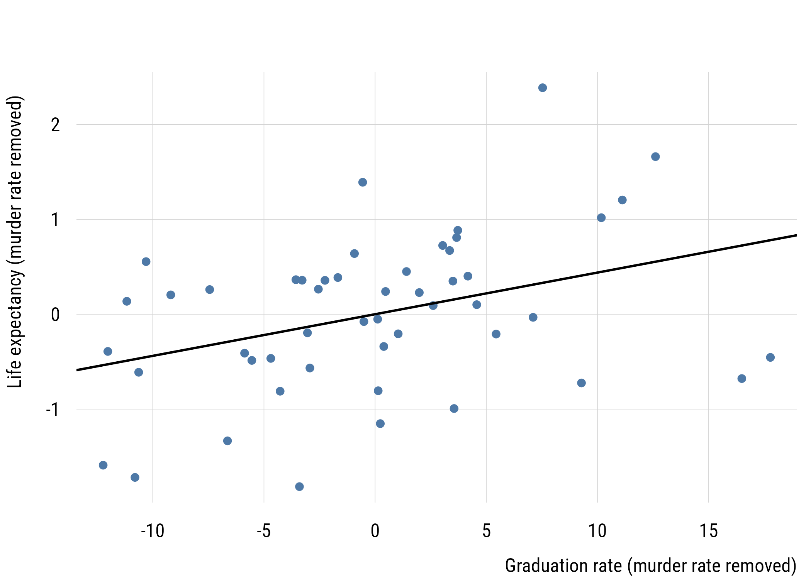
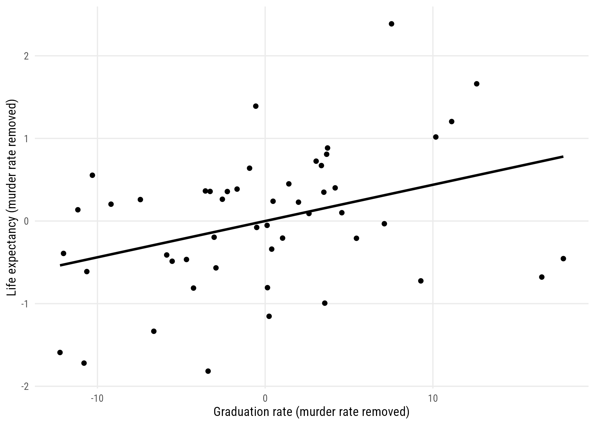
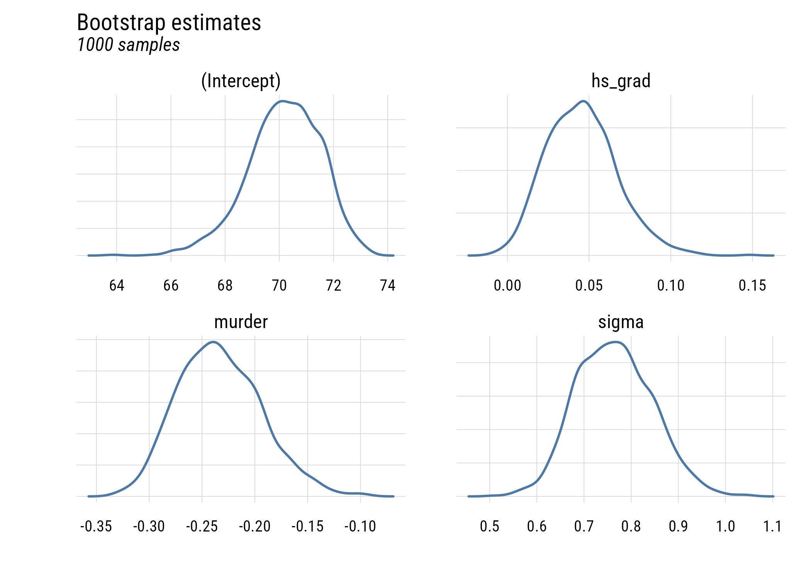
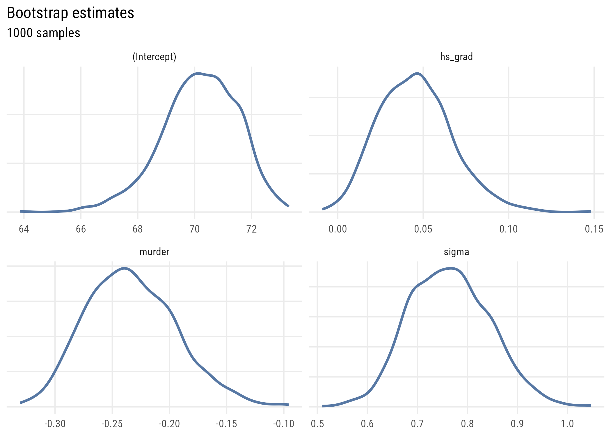

states <- as.data.frame(state.x77) |>
rename(life_exp = `Life Exp`, hs_grad = `HS Grad`, murder = Murder)11 Multiple regression
11.1 The multiple regression model
We want to model life_exp as a function of hs_grad and murder (the murder rate per 100,000 population in 1976). We can write the equation this way:
\[\text{LIFEEXP}_i = \beta_0 + \beta_1(\text{HSGRAD}_i) + \beta_2(\text{MURDER}_i) + \varepsilon_i\]
Or we could write it in the more general notation we saw in Chapter 9:
\[\begin{align} \text{LIFEEXP}_i &\sim \mathcal{N}(\mu_i, \sigma) \\ \mu_i &= \beta_0 + \beta_1(\text{HSGRAD}_i) + \beta_2(\text{MURDER}_i) \end{align}\]
Before estimating the model, here’s a quick look at the three variables. You can see that all of them are correlated with each other. That is, there is at least some redundancy among the predictors.
round(cor(states[, c("life_exp", "hs_grad", "murder")]), 3) life_exp hs_grad murder
life_exp 1.000 0.582 -0.781
hs_grad 0.582 1.000 -0.488
murder -0.781 -0.488 1.000These are the Pearson’s \(r\) correlations. What would the PREs/\(R^2\)s be for the separate simple regressions of life expectancy on these predictors?
simple_hs <- lm(life_exp ~ hs_grad, data = states)
simple_murder <- lm(life_exp ~ murder, data = states)
c(hs_grad = summary(simple_hs)$r.squared,
murder = summary(simple_murder)$r.squared) hs_grad murder
0.3389757 0.6097201 11.2 Estimating parameters in multiple regression
Let’s estimate the two-predictor model.
fit <- lm(life_exp ~ hs_grad + murder, data = states)
msummary(fit, gof_map = c("nobs", "r.squared", "rmse"))| (1) | |
|---|---|
| (Intercept) | 70.297 |
| (1.016) | |
| hs_grad | 0.044 |
| (0.016) | |
| murder | -0.237 |
| (0.035) | |
| Num.Obs. | 50 |
| R2 | 0.663 |
| RMSE | 0.77 |
Something has moved. On its own, graduation rate carried a slope of 0.0968. In the presence of the murder rate it is 0.0439 (less than half).
11.3 Interpreting parameters in multiple regression
11.3.1 Getting the language right
Here is how I might interpret these coefficients:
According to the model, adjusting for the murder rate, each additional percentage point of high school graduation predicts .044 more years of life expectancy.
According to the model, adjusting for the high school graduation rate, each unit increase in the murder rate per 100,000 predicts .237 fewer years of life expectancy.
A couple of important things are:
- use “adjusting” rather than controlling (the language is, appropriately, weaker)
- avoid causal language and focus on “expectation” and “prediction” conditional on your specific model
WarningAdjusting for a variable is not the same as removing its influence
It’s tempting to read “adjusting for the murder rate” as “as if murder rates were equal everywhere.” That isn’t what happened. The adjustment removes the part of graduation rates that’s linearly related to murder rates, in these data, and nothing more. It doesn’t account for anything you didn’t measure.
11.3.2 Comparing coefficients
These predictors are on different units. HS graduation is percentages and the murder rate is per 100,000. But it’s also worth pointing out that graduating from high school is (fortunately) more common than being murdered. How could we compare the sizes of these coefficients?
Here are the results with x-standardization. Interpret these. Be sure to use the correct units!
standardized_x <- states |>
mutate(hs_z = as.numeric(scale(hs_grad)),
murder_z = as.numeric(scale(murder)))
coef(lm(life_exp ~ hs_z + murder_z, data = standardized_x))(Intercept) hs_z murder_z
70.8786000 0.3544776 -0.8752275 Here are the results with full standardization.
fully <- standardized_x |>
mutate(life_z = as.numeric(scale(life_exp)))
coef(lm(life_z ~ hs_z + murder_z, data = fully)) (Intercept) hs_z murder_z
-3.514457e-15 2.640639e-01 -6.519902e-01 These can be considered partial correlations as well as partial regression coefficients.
11.4 More intuition
How does multiple regression work? We can build a two-predictor multiple regression out of a series of simple regressions.1
1 This is sometimes referred to as the Frisch-Waugh-Lovell theorem but it looks like first credit for this goes to Udny Yule in 1907.
Here it is for hs_grad:
hs_resid <- residuals(lm(hs_grad ~ murder, data = states))
life_resid <- residuals(lm(life_exp ~ murder, data = states))
coef(lm(life_resid ~ hs_resid))[2] hs_resid
0.0438873 You can confirm this is the same as \(b_1\) for hs_grad estimated above.
Now for murder:
murder_resid <- residuals(lm(murder ~ hs_grad, data = states))
life_resid2 <- residuals(lm(life_exp ~ hs_grad, data = states))
coef(lm(life_resid2 ~ murder_resid))[2]murder_resid
-0.2370901 You can confirm this is the same as \(b_2\) for murder estimated above.
c(b1 = unname(coef(fit)[2]), b2 = unname(coef(fit)[3])) b1 b2
0.0438873 -0.2370901 This two-step procedure should give you some sense of what we mean when we talk about “adjustment”; we are pulling the influence of a third variable2 out of the relationship with the other two and then estimating a “simple” regression on those adjusted variables.
2 We’re usually (as in this case) “pulling it out” under the assumption that the relationships between that third variable and the other two are linear.
plt(life_resid ~ hs_resid, type = "p",
xlab = "Graduation rate (murder rate removed)",
ylab = "Life expectancy (murder rate removed)")
abline(lm(life_resid ~ hs_resid), lwd = 2)
ggplot(data.frame(hs_resid, life_resid), aes(x = hs_resid, y = life_resid)) +
geom_point() +
geom_smooth(method = "lm", se = FALSE, color = "black") +
labs(x = "Graduation rate (murder rate removed)",
y = "Life expectancy (murder rate removed)")`geom_smooth()` using formula = 'y ~ x'
11.5 Statistical inference in multiple regression
There’s not much to add here conceptually beyond what we did for simple regression. But I’ll add a couple of things.
confint(fit) 2.5 % 97.5 %
(Intercept) 68.25382379 72.34034424
hs_grad 0.01144419 0.07633041
murder -0.30807483 -0.16610536Neither interval contains zero. And the model comparison machinery still applies: is graduation rate worth adding to a model that already has murder?
anova(simple_murder, fit)Analysis of Variance Table
Model 1: life_exp ~ murder
Model 2: life_exp ~ hs_grad + murder
Res.Df RSS Df Sum of Sq F Pr(>F)
1 48 34.461
2 47 29.770 1 4.691 7.4059 0.009088 **
---
Signif. codes: 0 '***' 0.001 '**' 0.01 '*' 0.05 '.' 0.1 ' ' 1pre <- (deviance(simple_murder) - deviance(fit)) / deviance(simple_murder)
pre[1] 0.136122811.5.1 Bootstrapping
We can use bootstrapping to demonstrate how sample size and sampling variability affect the precision of our parameter estimates.
set.seed(522)
# get function that spits out estimates
get_parameter_estimates <- function(formula, data) {
## estimate model
fit <- lm(formula = formula, data = data)
## extract and name sigma
s <- sigma(fit)
names(s) <- "sigma"
## put together all params
params <- c(coef(fit), s)
## return them
return(params)
}
# create skeleton and iterate with resampling
myboots <- tibble(sim_id = 1:1000) |>
rowwise() |>
mutate(params = list(get_parameter_estimates(
formula = life_exp ~ hs_grad + murder,
data = slice_sample(states,
n = 50,
replace = TRUE)))) |>
unnest_longer(params,
values_to = "value",
indices_to = "term")This is the data structure we have.
print(myboots, n = 8)# A tibble: 4,000 x 3
sim_id term value
<int> <chr> <dbl>
1 1 (Intercept) 71.1
2 1 hs_grad 0.0320
3 1 murder -0.259
4 1 sigma 0.778
5 2 (Intercept) 70.1
6 2 hs_grad 0.0483
7 2 murder -0.236
8 2 sigma 0.811
# i 3,992 more rowsWe can plot the four parameters using density plots.
plt(~ value,
data = myboots,
main = "Bootstrap estimates",
sub = "1000 samples",
facet = term,
facet.args = list(free = TRUE),
type = type_density(joint.bw = "none"),
yaxt = "n",
ylab = "",
xlab = "",
lw = 2)
ggplot(myboots, aes(x = value)) +
geom_density(linewidth = 1, color = tableau10[1]) +
facet_wrap(~term, scales = "free") +
labs(
title = "Bootstrap estimates",
subtitle = "1000 samples",
x = NULL, y = NULL) +
theme(axis.text.y = element_blank(), axis.ticks.y = element_blank())
This shows the uncertainty in the estimates across the bootstrap samples.
11.5.2 When predictors overlap
The more two predictors share, the less unique variation is left to estimate either one with. We can watch it happen:
set.seed(522)
get_se <- function(rho, n = 400) {
d <- tibble(
x1 = rnorm(n),
x2 = rho * x1 + sqrt(1 - rho^2) * rnorm(n)
) |>
mutate(y = 0.5 * x1 + 0.5 * x2 + rnorm(n))
fit <- lm(y ~ x1 + x2, data = d)
coef(summary(fit))["x1", "Std. Error"]
}
expand_grid(
rep = 1:400,
rho = c(0, 0.3, 0.6, 0.9, 0.95)
) |>
rowwise() |>
mutate(se = get_se(rho)) |>
group_by(rho) |>
summarize(mean_SE = round(mean(se), 4), .groups = "drop")# A tibble: 5 x 2
rho mean_SE
<dbl> <dbl>
1 0 0.0502
2 0.3 0.0526
3 0.6 0.0626
4 0.9 0.115
5 0.95 0.160 The true coefficient is 0.5 in every one of these simulations. Only the standard error changes. This is collinearity, and note what it does and doesn’t do: the estimates stay unbiased, they just become imprecise. It’s a shortage of information.
11.6 Recap
- multiple regression predicts an outcome from two or more predictors at once
- correlated predictors mean redundancy, and coefficients change when predictors are added or removed
- a coefficient is the slope on the part of that predictor not explained by the others
- you can build it out of simple regressions (Frisch-Waugh-Lovell)
- write “adjusting for,” not “controlling for,” and attribute conclusions to the model
- fully standardized coefficients are partial correlations
- collinearity inflates standard errors without biasing estimates